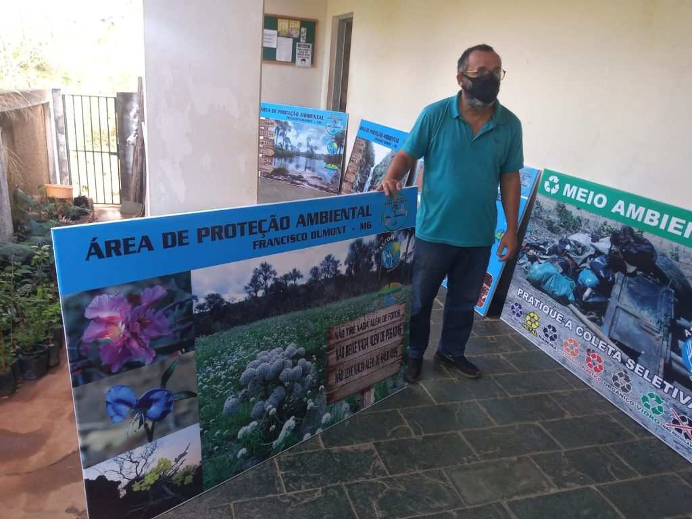
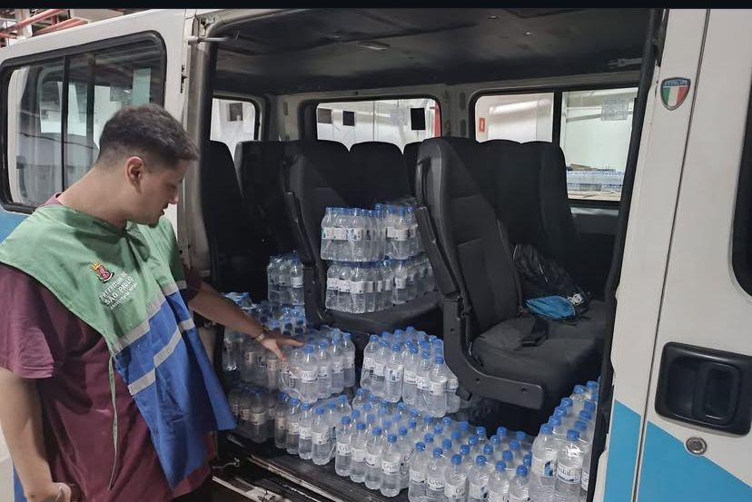

Projeto Auxiliando na Preservação do Meio Ambiente
Sobre o Projeto
O Projeto Auxiliando na Preservação do Meio Ambiente é uma iniciativa voltada para a educação ambiental e a mobilização social em prol da sustentabilidade. Por meio de campanhas visuais, como banners informativos e atividades de conscientização, o projeto destaca a relevância da preservação das áreas de proteção ambiental, da biodiversidade e do manejo adequado dos resíduos sólidos.
Projeto Auxiliando na Preservação do Meio Ambiente
Distribuição de Água em Dias de Calor Intenso
O projeto de Distribuição de Água em Dias de Calor Intenso tem como objetivo promover bem-estar e segurança para a população atendida em momentos de altas temperaturas. A iniciativa consiste na entrega diária de garrafas de água potável, assegurando hidratação adequada e reduzindo riscos à saúde relacionados ao calor extremo.
Nossos Objetivos
- Objetivo 1: Encaminhar atendidos para possível tratamento
- Objetivo 2: Encaminhar para acolhimentos
- Objetivo 3: Realizar recâmbio familiares de pessoas em situação de rua
- Objetivo 4: Acompanhamento com atendidos
- Objetivo 5: Projetos beneficentes